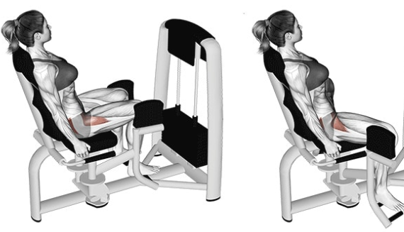
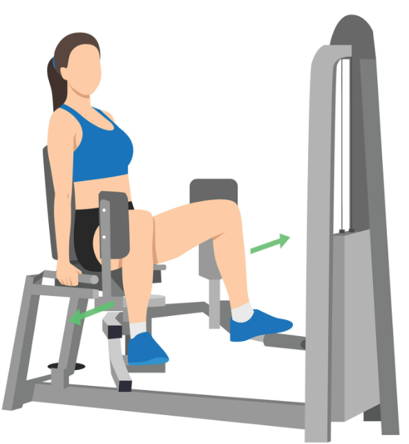

🌱 Calentamiento de pierna


Lo importante aqui es mover las articulaciones, tanto de rodillas, tobillos, ingle y cadera. Lo debes mezclar con 2 series del siguiente ejercicio, pero sin peso, es solo movilidad dura y pura. Calentar motores.
🎥 Ver calentamiento🌱 Sentadilla en hacka (Principal de la rutina)


Apoya la espalda y la cadera en el respaldo y coloca los pies aproximadamente al ancho de los hombros. Ajusta su posición hasta que puedas bajar cómodamente. Desciende lentamente, flexionando las rodillas; intenta llegar cerca de 90° si tu movilidad lo permite, sin despegar la espalda ni la cadera del respaldo. Empuja para volver arriba sin bloquear bruscamente las rodillas y usa un recorrido que puedas controlar.
🎥 Sentadilla en hacka 1🎥 Sentadilla en hacka 2
🔄 Variante
Sentadilla con barra


Puedes usarla si la máquina hack está ocupada. Es una alternativa más técnica: elige poco peso y pide ayuda a una entrenadora o entrenador si todavía no conoces el movimiento.
🎥 Ver variante sentadilla⭐ Sentadilla búlgara


Coloca un pie detrás de ti sobre el banco y el otro delante, apoyado firmemente en el suelo. Mantén el torso estable y baja flexionando la rodilla delantera; procura que siga la dirección del pie. Empuja con esa pierna para volver. Puedes empezar sin peso y sujetarte de un apoyo; baja solo hasta donde mantengas el equilibrio y el control.
🎥 Ver sentadilla búlgara 🎥 Ver otra demostración🍑 Hip Thrust con barra


Coloca la parte alta de la espalda apoyada en un banco y usa una almohadilla o colchoneta para que la barra no te moleste. Mantén los pies apoyados; al subir, eleva la cadera y contrae los glúteos sin arquear la espalda. Baja de forma controlada y repite.
🎥 Ver hip thrust🍑 Sentadilla SUMO


Coloca los pies más separados que en una sentadilla normal y orienta las puntas ligeramente hacia afuera. Mantén el pecho erguido y la espalda estable. Baja flexionando las rodillas y la cadera hasta donde puedas conservar una postura cómoda; empuja el suelo para volver arriba. No rebotes ni fuerces la profundidad.
🎥 Ver sentadilla sumo 🎥 Ver sentadilla sumo 2🍑 Abductor de glúteo en máquina


Siéntate en la máquina y ajusta el respaldo y los apoyos para estar cómoda. Mantén la espalda apoyada y abre las piernas lentamente, sin impulsarte ni mover el tronco. Haz una pausa breve al abrir y regresa con control, sin dejar que las placas choquen. Elige un peso que puedas manejar con buena técnica.
🎥 Ver abductor de glúteo🎥 Ver otra demostración
🏆 Lo Lograste
Terminaste un entrenamiento más.
Hoy eres un poquito más fuerte, más disciplinada y más cercana a la mejor versión de ti misma.
❤️ Estoy muy orgulloso de ti. ❤️